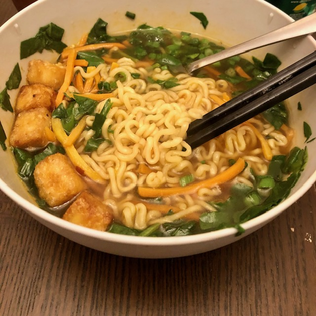

Vegetable Ramen

Description
My personal ramen recipe. Vegetarian.
Ingredients
- 1 package Shin Ramyun, discard seasoning and veg packet
- 2 cups water
- Protein (optional): fried egg, egg omelette cut into strips, boiled egg, egg like egg drop soup, fried tofu, uncooked tofu
- Vegetables: frozen chopped carrot/broccoli mix, raw shredded carrots, raw spinach, frozen chopped spinach
- 2 teaspoons Better than Boullion Vegetable seasoning
- 1 teaspoon Gochugang (Korean red chili pepper paste)
- 1 tablespoon Gochugaru (Korean red chili pepper flakes)
- 1 teaspoon soy sauce
- Seasame seeds
- Chopped green onions
- Sesame oil
Steps
- Add 2 cups water, raw vegetables, Better than Boullion seasoning, gochugang, gochugaru and soy sauce
to pot and bring to a boil
Add noodles package to pot and cook for about 2 minutes
- Add cooked vegetables and protein to the pot and heat for about 1 minute until everything is hot
- Remove from heat and pour into a bowl
- Garnish with sesame seeds, green onions and a dash of sesame oil